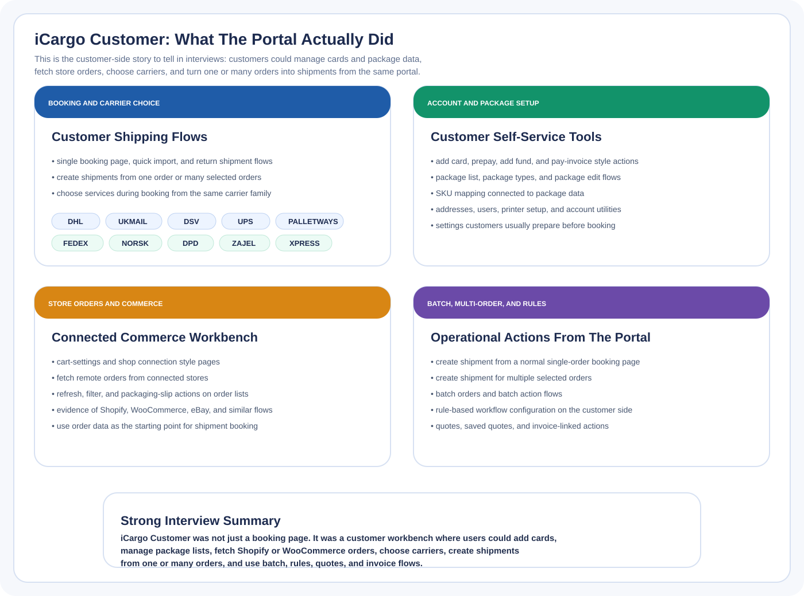

Visual Overview

Reference visual showing the customer-facing capabilities grouped inside the portal.
Customer-Side Project
iCargo Customer was the self-service portal where customers managed bookings, connected-store orders, package setup, batch flows, and rule-based shipment workflows.

Reference visual showing the customer-facing capabilities grouped inside the portal.
This shows customer-facing logistics work, not only internal admin screens. The portal handled booking, account setup, order-driven shipping, and customer operations from one place.
The customer portal depended on parcel-api for shared business logic and exposed order-driven shipping capabilities.